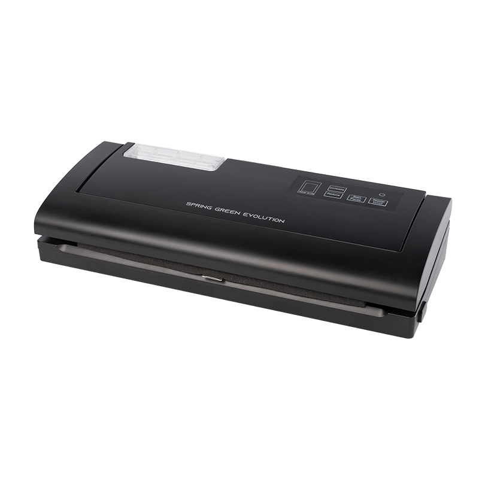

เครื่องซีลสูญญากาศ SGE VC-ECO Gen2
SGE VC-ECO Gen2 เป็นเครื่องซีลสูญญากาศที่ได้รับความนิยมสำหรับการใช้งานในบ้านและธุรกิจขนาดเล็ก เนื่องจากคุณภาพและฟังก์ชันการใช้งานที่คุ้มค่า
ทำไมถึงต้องเลือก SGE VC-ECO Gen2
-
ระบบการทำงานอัตโนมัติ: ใช้งานง่ายเพียงปุ่มเดียว ทั้งการดูดอากาศและการซีลถุง รวดเร็ว ใช้เวลาเพียง 10-15 วินาทีต่อรอบ
-
รองรับถุงหลากหลายชนิด: ใช้ได้กับถุงสูญญากาศทั่วไป เช่น ถุงลามิเนตหรือถุงพลาสติกชนิดพิเศษ
-
ประหยัดพลังงาน: ตัวเครื่องถูกออกแบบมาให้ใช้พลังงานต่ำ แต่ยังคงประสิทธิภาพสูง
-
วัสดุและการออกแบบ: ตัวเครื่องทำจากวัสดุที่แข็งแรง ทนทานต่อการใช้งาน ขนาดกะทัดรัด น้ำหนักเบา เหมาะสำหรับใช้งานในพื้นที่จำกัด
-
เหมาะสำหรับอาหารหลากหลายประเภท: ซีลอาหารแห้ง เช่น ข้าวสาร ธัญพืช ซีลอาหารสด เช่น เนื้อสัตว์ ผัก ผลไม้
|
ข้อดีของ SGE VC-ECO Gen2 |
ข้อเสียที่ควรพิจารณา |
|
ราคา: อยู่ในระดับที่เหมาะสมกับคุณภาพ |
อาจไม่เหมาะกับการใช้งานหนักหรือใช้งานต่อเนื่องระยะเวลานาน เช่น ธุรกิจขนาดใหญ่ |
คำแนะนำเพิ่มเติม
-
การเลือกถุงสูญญากาศ: ใช้ถุงที่มีพื้นผิวด้านในลายลอนเพื่อให้เครื่องดูดอากาศได้ดีขึ้น หลีกเลี่ยงถุงที่บางเกินไป เพราะอาจฉีกขาดระหว่างซีล
-
การดูแลรักษา: หลังการใช้งาน เช็ดทำความสะอาดเครื่องทันที โดยเฉพาะบริเวณแถบซีล หลีกเลี่ยงการให้ของเหลวหรือน้ำมันหกเข้าไปในตัวเครื่อง
-
การใช้งานต่อเนื่อง: พักเครื่องหลังจากใช้งานต่อเนื่อง 10-15 รอบ เพื่อยืดอายุการใช้งาน